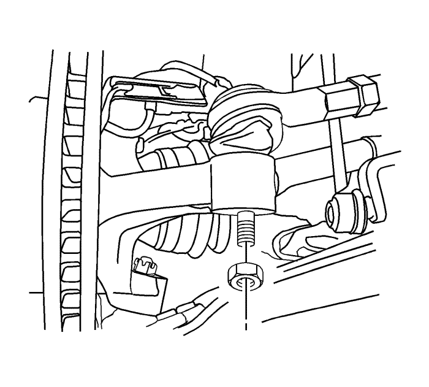
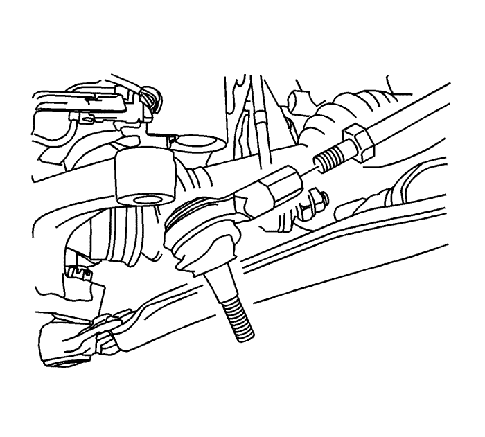

Captiva
Sustitución la barra de acoplamiento exterior del varillaje de la dirección
Procedimiento de desmontaje
Eleve y sujete el vehículo en un bastidor de alineación. Consultar
Elevación del vehículo con un gato
.

Desmonte el conjunto de llanta y neumático delantero. Consultar
Desmontaje y montaje de la rueda y el neumático
.
Marque las roscas en la barra de acoplamiento interior para ayudar en el montaje de la tuerca de ajuste.
Desmonte la tuerca de la barra de acoplamiento exterior y desconecte la barra de acoplamiento exterior de la mangueta.

Afloje la tuerca de ajuste de la barra de acoplamiento exterior.
Desacople la barra de acoplamiento de la barra de acoplamiento interior.
Procedimiento de montaje
Sitúe la tuerca de ajuste de acuerdo con las marcas efectuadas en la barra de acoplamiento interior.
Una la barra de acoplamiento exterior a la barra de acoplamiento interior.
Conecte la barra de acoplamiento exterior a la mangueta.
Precaución:
Consulte
Precaución con las fijaciones
en la sección Prólogo
Monte el tornillo de la barra de acoplamiento exterior y apriételo a un par de
50 N·m (37 lb. pie)
.
Mida la alineación de las ruedas. Consultar
Medición de la alineación de las ruedas
.
Ajuste la convergencia delantera, si es necesario. Consultar
Alineamiento de la rueda - Ángulo de ángulo de dirección o ajuste de convergencia delantera
.
Apriete la tuerca de ajuste a un par de
60 N·m (44 lb. pie)
.
Monte el conjunto delantero de neumático y llanta. Consultar
Desmontaje y montaje de la rueda y el neumático
.
Bajar el vehículo.
© Copyright Chevrolet Europe. All rights reserved